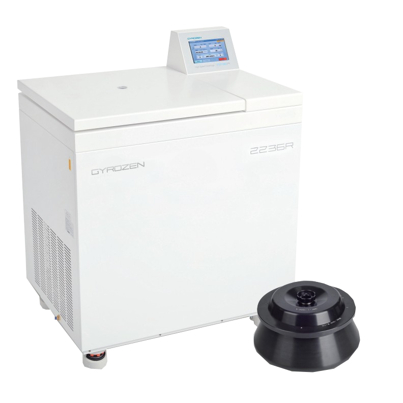

Centrífuga Gyrozen GZ-2236 R

| Centrífuga Gyrozen GZ-2236 R | |
|---|---|
| Localização: | Lab. 2.39 Edf. 8 |
| Responsável: | Margarida RamiresRodrigo Borges |
| Operador: | Utilizador |
| Princípio de Funcionamento: | Centrífugação |
| Fabricante: | Gyrozen |
| Modelo: | GZ-2236 R |
| Tipo: | Centrífuga |
| Website: | Gyrozen |
Centrífuga refrigerada Gyrozen GZ-2236R, concebida para a separação de amostras através de centrifugação em aplicações laboratoriais e de investigação. O equipamento permite o processamento de diferentes volumes e formatos de recipientes, dispondo de rotores compatíveis com frascos de 250 mL e tubos Falcon de 50 mL, tornando-o adequado para a concentração, separação e preparação de amostras biológicas e ambientais.
A GZ-2236R dispõe de controlo de velocidade e temperatura, permitindo ajustar as condições de centrifugação às características da amostra e ao procedimento experimental. O sistema de refrigeração permite manter as amostras a baixa temperatura durante a centrifugação, reduzindo o risco de degradação de compostos ou alterações nas propriedades das amostras sensíveis à temperatura. O equipamento é particularmente adequado para aplicações que requerem o processamento de volumes elevados ou de múltiplas amostras em simultâneo.
Calendário / Disponibilidade
RequisitarPrincipais Aplicações
- Separação de células e componentes celulares;
- Concentração de biomassa;
- Separação de fases e precipitados;
- Processamento de grandes volumes;
- Processamento de amostras microbiológicas;
- Preparação de amostras para análises químicas e bioquímicas;
- Preparação de amostras para análises químicas e bioquímicas;
Específicações Técnicas:
| Específicação | Valor |
|---|---|
| Fabricante | Gyrozen |
| Modelo | GZ-2236R |
| Velocidade Máxima | 22 000 rpm (depende do rotor) |
| RCF Máxima | 54 111 x g (depende do rotor) |
| Faixa de Temperatura | -20 a -40 °C |
| Tipo de Rotor | Angulo fixo |
| Rotor 250 mL | 6 x 250 mL |
| Rotor 50 mL | 6 x 50 mL |
| Sistema de Refrigeração | Refrigeração Rápida |
| Reconhecimento Automático de Rotor | Sim |
| Reconhecimento Automático de Desiquilíbrio | Sim |
| Dimensões | 82.4 cm x 63.4 cm x 104.9 cm |